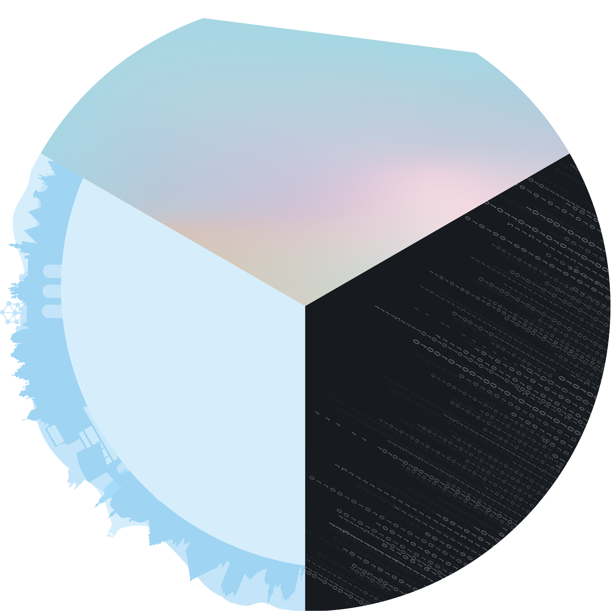

Hi, I'm Alice Derriks
I’m a dynamic student from Belgium . I learn web design, at the Haute École Albert Jacquard . On this website you will discover some of the works that I have done during my training .
-
Rethinking UX
Find Your Type
Find your type is a presentation site for a banner, created as part of the Rethinking User Experience workshop .
Discover -
Dataplay
Late
Late is a project that combines data and interactivity to create a playful experience .
Discover -
December
After Yang
The December project sets up a presentation of the film After Yang and simulates its purchasing process .
Discover
